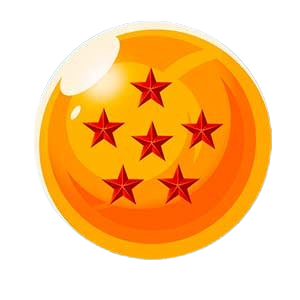
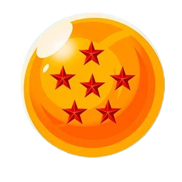

Mapa interactivo de Dragon Ball
Explora el mundo de Dragon Ball en este mapa interactivo. Encuentra las 7 esferas del dragón y descubre información detallada sobre los lugares más icónicos de la serie. Utiliza la rueda del mouse o los botones de zoom para acercarte y alejarte, y haz clic en las esferas para aprender más sobre cada ubicación.
 
